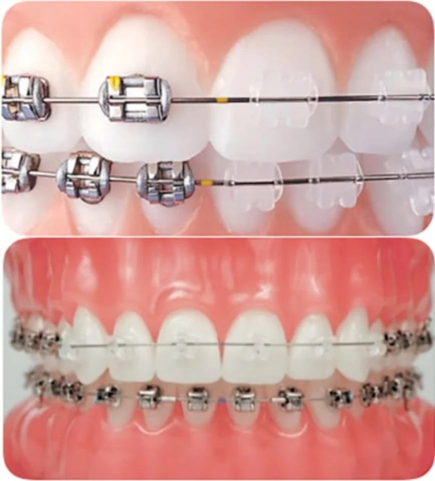

Ortodontista ad Atella, provincia di Potenza
Nello Studio Dentistico Morlino l'ortodonzia si integra con la gnatologia e con la valutazione funzionale dell'apparato masticatorio. Ogni piano nasce dalla visita: analisi delle arcate, del morso e dell'età di crescita, obiettivi estetici e funzionali, tempi stimati e scelta condivisa del dispositivo.
Accogliamo pazienti da Atella, dal Vulture-Melfese (Melfi, Rionero, Venosa e comuni limitrofi) e dalla provincia di Potenza che cercano un percorso ortodontico chiaro e personalizzato.